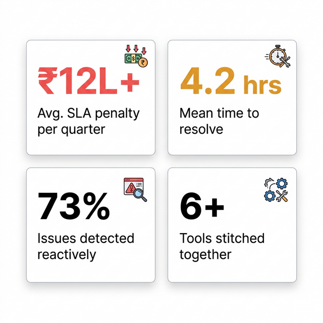
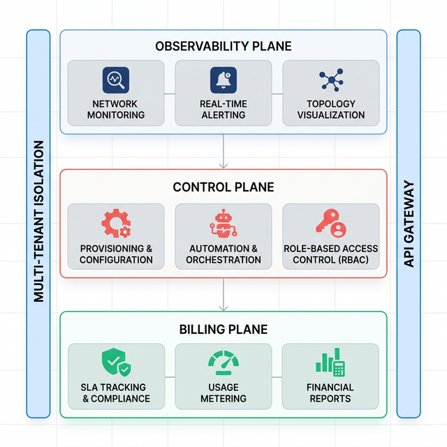

Live infrastructure observability
Total Control Over Your Network Infrastructure.
Monitor, manage & automate your entire network from one platform.
Sites managed
12,480+
Uptime
99.98%
SLA alerts
24/7
 Neurix Platform
Neurix Platform
Hotspot
2,847
active sessions
Shield
14.2K
threats blocked today
Logs
8.4M
events / 24h
ACS · TR-069 / TR-369
6,120
CPE devices managed
Incidents
1.8h
avg. resolution time
BSS
Who Neurix is for
Built for high‑dependency, multi‑site networks.
A command‑center for ISP, enterprise & healthcare networks.
5+
Industries
10K+
Branches
6+
Link types
Challenges
How Neurix helps
Failover ready on 18 sites
Platform
Everything you need to run your network — in one place.
Six integrated modules that handle hotspot management, security, logging, device configuration, incident response, and business operations.
Hotspot
Captive portal, bandwidth control, guest Wi‑Fi & voucher auth.
Shield
DDoS protection, firewall management & threat intelligence.
Logs — NetFlow / Device
NetFlow/IPFIX analytics, device syslog & traffic visibility.
ACS — TR‑069 / TR‑369
CPE firmware, remote diagnostics & bulk config at scale.
Incident Management
Ticketing, SLA tracking & automated escalation workflows.
BSS
Business operations & commercial management.
The cost of losing visibility
When connectivity fails, business stops.
ILL degradation costs revenue and trust. Neurix is built for environments where downtime isn't an option.
- Downtime penalties
- SLA breaches & regulatory costs
- Manual monitoring
- Siloed tools & blind spots
- Distributed complexity
- No single system of record
- Reactive firefighting
- Reacting vs. optimizing
₹12L+
avg penalty
6+
tools used
73%
reactive
4.2h
avg MTTR

Architecture & reliability
Built like critical infrastructure, not a marketing dashboard.
Event‑driven, multi‑tenant. Cloud & on‑prem ready.

ILL Monitoring Platform for distributed, always‑on networks.
ILL Monitoring
Enterprise Monitoring
ISP Management
SLA Tracking
Built for operational reality
Real answers, not marketing pages.
Clean SLA reports & defensible billing.
Single source of truth for all stakeholders.
See your network in action
Schedule a personalised Neurix walkthrough.
Frequently asked questions
Clarity for evaluation and deployment teams.
Ready to take control of your network?
Proactive management for teams that own connectivity.